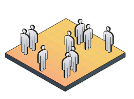

Freier und direkter Handel zwischen Menschen ist möglich.
Der dezentrale Marktplatz im FDN liefert eine neue Perspektive auf die Art und Weise, wie wir im digitalen Zeitalter Geschäfte machen und miteinander Wirtschaft treiben können: dezentral, ohne Mittelsmann, völlig privat und kryptografisch gesichert etablieren wir einen deutschsprachigen Markplatz, der zukunftsfähig ist.

Die Vorteile des Marktes für Käufer und Verkäufer
Privat
Alle Daten zu deinem Profil, alle Bestellungen und Transaktionen bleiben kryptografisch gesichert in Deinen Händen.
Anonym
Unverfolgbare und anonyme Zahlungen sind erlaubnisfrei dank privater Kryptowährungen Standard.
Günstig
Außer minimalen Gebühren für sichere Transaktionen war Online-Handel ohne Mittelsmann oder staatliche Kontrolle noch nie so günstig.